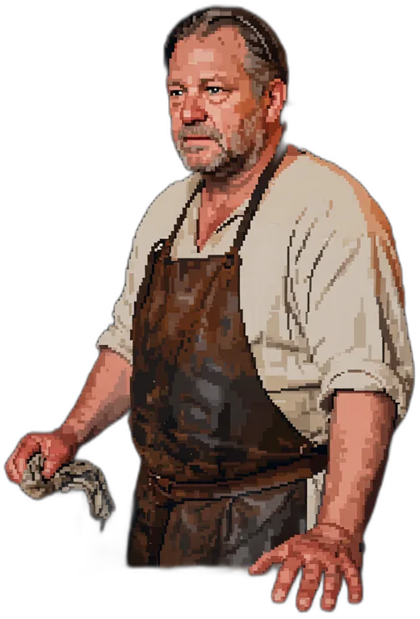

Низкий зал, пол посыпан опилками, которые меняют реже, чем стоило бы. Пахнет рыбой, смолой и табачным дымом. Моряк сдвигается на лавке, освобождая тебе край — не из вежливости, просто так делают все, кто долго жил в тесноте.